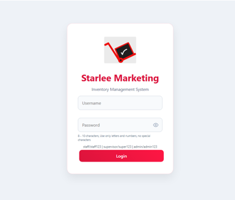
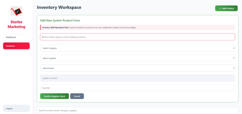
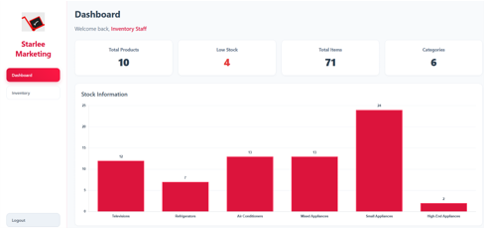

My Works
Hi, I’m Lorenz. By day, I am a dedicated Systems Administrator at Starlee Marketing Inc., where I manage IT infrastructure, ensure system stability, and provide technical support to keep operations running smoothly. My professional life is built on a foundation of precision, logic, and analytical problem-solving.
While I spend my professional hours optimizing networks and managing systems, my camera is my primary tool for creative expression. Photography started for me as a way to disconnect from the screen and reconnect with the natural world. It is the perfect balance to my technical career—a space where I can trade the digital complexity of server architecture for the raw, visual storytelling of nature.
I view these two paths as complementary rather than separate. The technical discipline I use to troubleshoot a network is the same focus I apply to mastering light, composition, and post-processing workflows. Whether I'm building a secure environment or capturing a landscape, my commitment to quality and detail remains at the forefront of everything I do.
Work Experience
Systems Administrator
Starlee Marketing Inc.
System Screenshots



Education
Davao del Norte State College